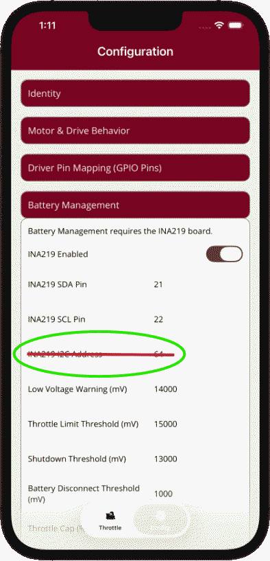
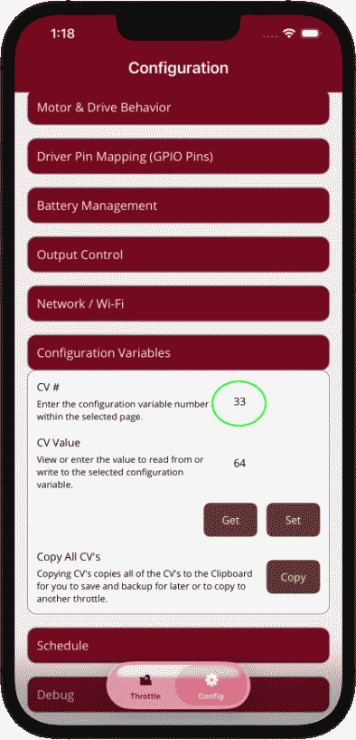

The I2C Address setting has been removed from this page.
Yes, the I2C Address configuration field is now intentionally removed from the Battery Management page. This helps reduce configuration overload and keeps the screen focused on the settings that users commonly need.


Why it was removed
The I2C Address value is rarely changed in typical installations. Because of that, showing it directly on the main Battery Management page added visual weight and extra decision-making for most users without providing much practical value in day-to-day setup. Removing it from the primary page helps simplify the configuration experience and makes the interface easier to scan, especially on mobile devices.
This is a deliberate usability improvement. The goal is not to remove flexibility, but to reduce clutter and prevent less-common configuration items from competing with the settings that matter most during normal setup and operation.
In other words, the setting remains available for advanced or unusual cases, but it is no longer placed directly on the Battery Management page where it can contribute to unnecessary complexity. Users who need it can access it through the Configuration Variables workflow, while everyone else benefits from a cleaner and more focused configuration screen.
For most users, this change will never affect normal operation. Only particular installations are likely to need an I2C Address adjustment, and those cases are considered rare.